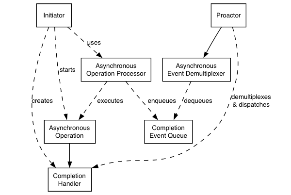

The asio library is based on the Proactor pattern [1]. This design note describes how asio implements this design pattern, and outlines the advantages and disadvantages of this approach.
First, let us examine how the Proactor design pattern is implemented in asio, without reference to platform-specific details.

Proactor design pattern (adapted from [1])
- Asynchronous Operation
- Defines an operation that is executed asynchronously, such as an asynchronous read or write on a socket.
- Asynchronous Operation Processor
- Executes asynchronous operations and queues events on a completion event queue when operations complete. From a high-level point of view, services like asio::stream_socket_service are asynchronous operation processors.
- Completion Event Queue
- Buffers completion events until they are dequeued by an asynchronous event demultiplexer.
- Completion Handler
- Processes the result of an asynchronous operation. These are function objects, often created using boost::bind.
- Asynchronous Event Demultiplexer
- Blocks waiting for events to occur on the completion event queue, and returns a completed event to its caller.
- Proactor
- Calls the asynchronous event demultiplexer to dequeue events, and dispatches the completion handler (i.e. invokes the function object) associated with the event. This abstraction is represented by asio::io_service.
- Initiator
- Application-specific code that starts asynchronous operations. The initiator interacts with an asynchronous operation processor via a high-level interface such as asio::stream_socket, which in turn delegates to a service like asio::stream_socket_service.
On many platforms, asio implements the Proactor design pattern in terms of a Reactor, such as select, epoll or kqueue. This implementation approach corresponds to the Proactor design pattern as follows:
- Asynchronous Operation Processor
- A reactor implemented using
select, epoll or kqueue. When the reactor indicates that the resource is ready to perform the operation, the processor executes the asynchronous operation and enqueues the associated completion handler on the completion event queue.
- Completion Event Queue
- A linked list of completion handlers (i.e. function objects).
- Asynchronous Event Demultiplexer
- This is implemented by waiting on an event or condition variable until a completion handler is available in the completion event queue.
On Windows NT, 2000 and XP, asio takes advantage of overlapped I/O to provide an efficient implementation of the Proactor design pattern. This implementation approach corresponds to the Proactor design pattern as follows:
- Asynchronous Operation Processor
- This is implemented by the operating system. Operations are initiated by calling an overlapped function such as
AcceptEx.
- Completion Event Queue
- This is implemented by the operating system, and is associated with an I/O completion port. There is one I/O completion port for each asio::io_service instance.
- Asynchronous Event Demultiplexer
- Called by asio to dequeue events and their associated completion handlers.
- Portability
The library interface can be reused independently of the operating system's underlying demultiplexing mechanism [1]. The Proactor interface may be implemented using a range of event sources, including the synchronous event demultiplexers that typify the Reactor pattern, such as select.
- Decoupling threading from concurrency
Long-duration operations are performed asynchronously by the Proactor on behalf of the application. Consequently applications do not need to spawn many threads in order to increase concurrency [1].
- Performance
Implementation strategies such as thread-per-connection can degrade system performance, due to increased context switching, synchronization and data movement among CPUs [1]. The Proactor pattern can avoid the cost of context switching by minimising the number of operating system threads, and only activating the logical threads of control that have events to process.
- Simplified application synchronisation
Asynchronous operation completion handlers can be written as though they exist in a single-threaded environment, and so application logic can be developed with little or no concern for synchronisation issues [1].
- Function composition
Function composition refers to the implementation of functions to provide a higher-level operation, such as sending a message in a particular format. Each function is implemented in terms of multiple calls to lower-level read or write operations.
For example, consider a protocol where each message consists of a fixed-length header followed by a variable length body, where the length of the body is specified in the header. A hypothetical read_message operation could be implemented using two lower-level reads, the first to receive the header and, once the length is known, the second to receive the body.
To compose functions in a Proactor model, asynchronous operations can be chained together. That is, a completion handler for one operation can initiate the next. Starting the first call in the chain can be encapsulated so that the caller need not be aware that the higher-level operation is implemented as a chain of asynchronous operations.
The ability to compose new operations in this way simplifies the development of higher levels of abstraction above a networking library, such as functions to support a specific protocol.
- Program complexity
It is more difficult to develop applications using asynchronous mechanisms due to the separation in time and space between operation initiation and completion [1]. Applications may also be harder to debug due to the inverted flow of control.
- Memory usage
Buffer space must be committed for the duration of a read or write operation, which may continue indefinitely, and a separate buffer is required for each concurrent operation. The Reactor pattern, on the other hand, does not require buffer space until a socket is ready for reading or writing.
[1] D. Schmidt et al, Pattern Oriented Software Architecture, Volume 2. Wiley, 2000.